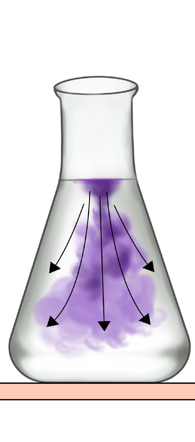

Student’s Book - Form Two
63
Transport of materials in living organisms
Introduction
For biological processes to occur in the body, efficient transport of essential materials from one place to another is crucial. In this chapter, you will learn about mechanism of transporting materials in living organisms, which are diffusion, osmosis, and mass flow. The competences developed will enable you to understand how substances move across cell membranes and through organisms.
You will also be able to support the survival of living things such as plants by ensuring efficient supply of the materials they need.
Think
Life without the transport of materials in living organisms
Concept of transport of materials
Task 3.1
Search the library and internet sources
for the concept of transport of materials
in living organisms. Then, write short
notes on the concept.
Transport
of
materials
is
the
movement of materials either from the environment into the organisms or from one part of the organism to another. It can also be the movement
of materials from the organism to the environment. Organisms require a transport system to carry out various life processes that include nutrition, respiration, excretion, coordination, growth,
and
development.
For
example, during nutrition, organisms take in food substances that they need for energy production, growth, and carrying out other life processes. The food substances consumed from the environment are metabolised into different nutrients and transported to different parts of the body for assimilation and storage. Then, the by-products and waste are excreted from the organisms to the environment.
Chapter Three

08/04/2026 10:18:16